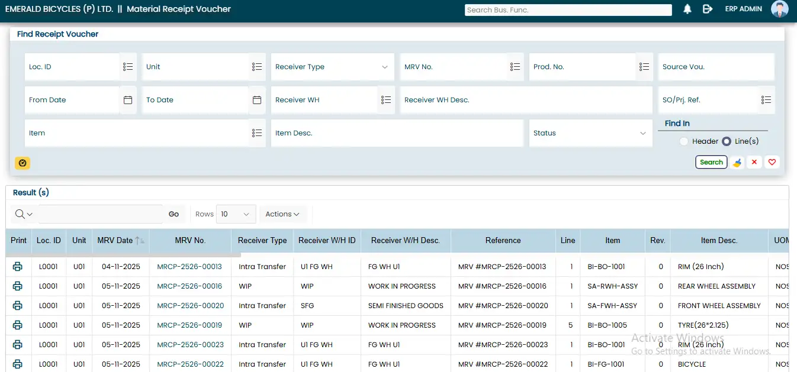
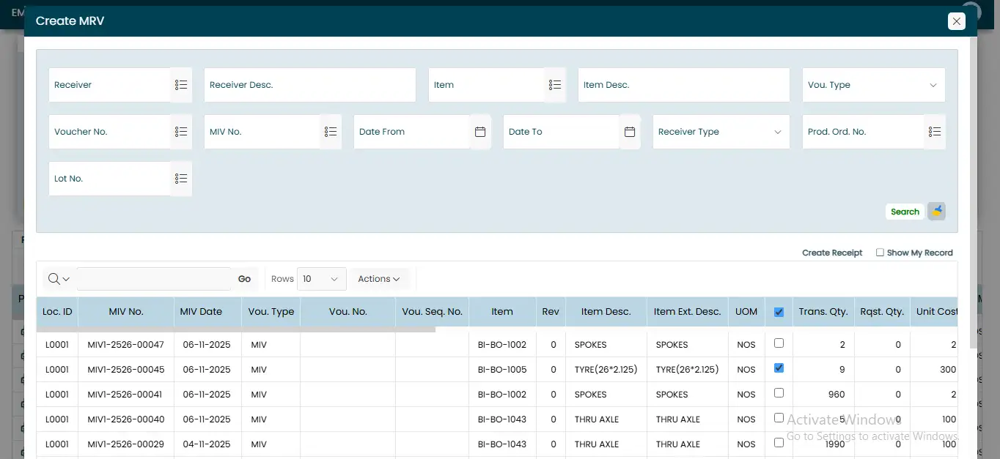
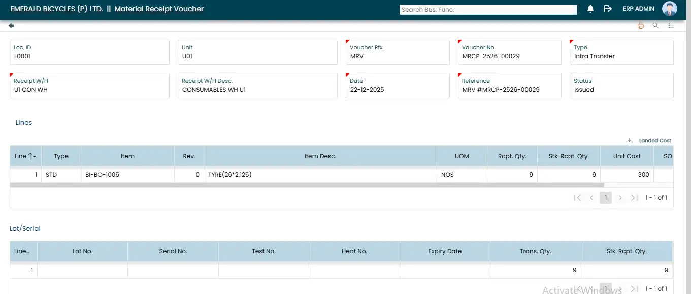

<div data-category="Inventory Control" data-title="Material Receipt Voucher" data-updated="January 27, 2026" data-contributors="RoadmapIT" data-breadcrumb="Home,Inventory Control,Material Receipt Voucher">
  <div class="page-content">
    <p>A Material Receipt Voucher is a document used in inventory management and accounting to record the receipt of materials or goods into a company’s inventory. It serves as proof that the materials have been received.</p>
    <h5>Navigation path:</h5>
    <p class="fs-6">Supply Chain Management \ Inventory \ Transaction \ Material Receipt voucher</p>
    
    <ul style="list-style-type: none; align-content: center">
      <li class="mouse-icon">Search screen displays the list of Material Receipt vouchers with the relevant details and its status</li>
      <li class="mouse-icon">User can filter the respective documents by entering the search parameters at the header.</li>
      <li class="mouse-icon">On clicking search button, system displays the results relevant to the search parameters entered.</li>
      <li class="mouse-icon">
        Using
        
        icon, entered search parameters can be cleared.
      </li>
      <li class="mouse-icon">
        To close the screen, use
        <i class="bi bi-x fs-4 mx-2 text-danger"></i>
        icon.
      </li>
    </ul>
    
    <ul style="list-style-type: none; align-content: center">
      <li class="mouse-icon">System displays the pending material issuance vouchers to be converted into receipt vouchers</li>
      <li class="mouse-icon">Select the document and click on create Receipt</li>
    </ul>
    
    <ul style="list-style-type: none; align-content: center">
      <li class="mouse-icon">Material Receipt Voucher document is created as shown above</li>
      <li class="mouse-icon">
        All the Line Items and issuance details are carried over to Material receipt voucher and now click on Post
        <i class="bi bi-check-lg fs-4 mx-1 text-success"></i>
        button to post the MRV document
      </li>
    </ul>
  </div>
</div>
